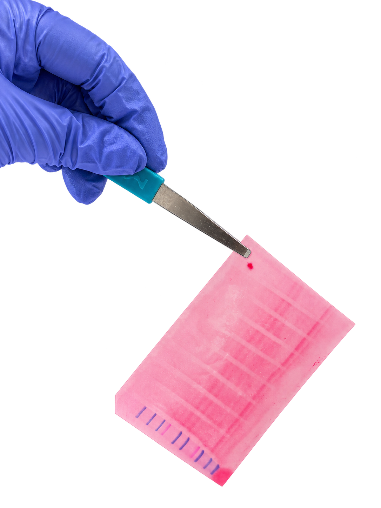
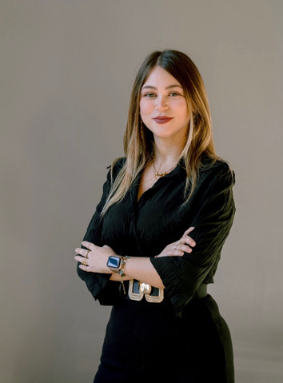
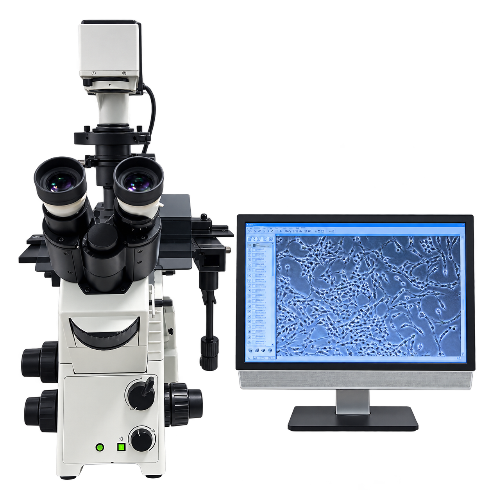
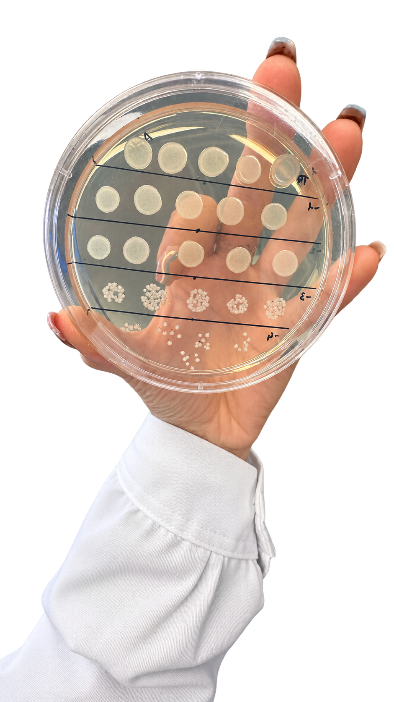

PRECISIONE
Metodo sperimentale, attenzione al dettaglio e cura nell’analisi.
BIOTECNOLOGA INDUSTRIALE
MONZA / ITALIA
Studentessa magistrale orientata alla ricerca cellulare, alla biologia molecolare e al life science.

CHI SONO

LETIZIA BRAMBILLA
Sono una studentessa magistrale in Biotecnologie Industriali. Mi interessa capire come funzionano i sistemi biologici, costruendo esperimenti solidi e interpretando i dati che producono.
All’Istituto di Ricerche Farmacologiche Mario Negri conduco in autonomia il mio progetto di tesi sul ruolo di FABP3 nella regolazione della massa muscolare.
Cerco opportunità nei settori biotech, farmaceutico e life science, dalla ricerca applicata ai ruoli tecnico-scientifici e trasversali.
Metodo sperimentale, attenzione al dettaglio e cura nell’analisi.
Autonomia, responsabilità e costanza nel lavoro quotidiano.
Nuove tecniche, nuove domande, nuove possibilità applicative.
RICERCA
DALLE CELLULE AI DATI

FABP3Identificazione dei meccanismi molecolari alla base della cachessia tumorale, con particolare attenzione al ruolo di FABP3.
Sviluppo e caratterizzazione funzionale di modelli cellulari knock-out e overesprimenti FABP3 mediante editing genomico.
Studio dell’interazione tra Bacillus subtilis e superfici verniciate per valutarne il potenziale nella biorimozione selettiva dei graffiti.
Analisi di vitalità cellulare e stress ossidativo, insieme allo studio dei biofilm mediante microscopia confocale.

B. SUBTILISCOMPETENZE
Tecniche sperimentali, strumenti digitali e capacità trasversali.
PERCORSO
Un percorso che unisce scienza, applicazioni e competenze organizzative.
Università degli Studi di Milano-Bicocca · LM-8
Università degli Studi di Milano · L-43
Portfolio Srl, 2023–2025: pratiche assicurative, polizze, sinistri, contabilità e supporto clienti. Carrera Srl, 2021–2022: archivi, documentazione e scadenze.
PhD Meeting 2026 · BioPharmaNetwork 2025 · Sicurezza in laboratorio e gestione dei rischi chimici e biologici.
Cantante solista e violinista dal 2012 al 2021. Scambio culturale EF a Dublino nel 2019.